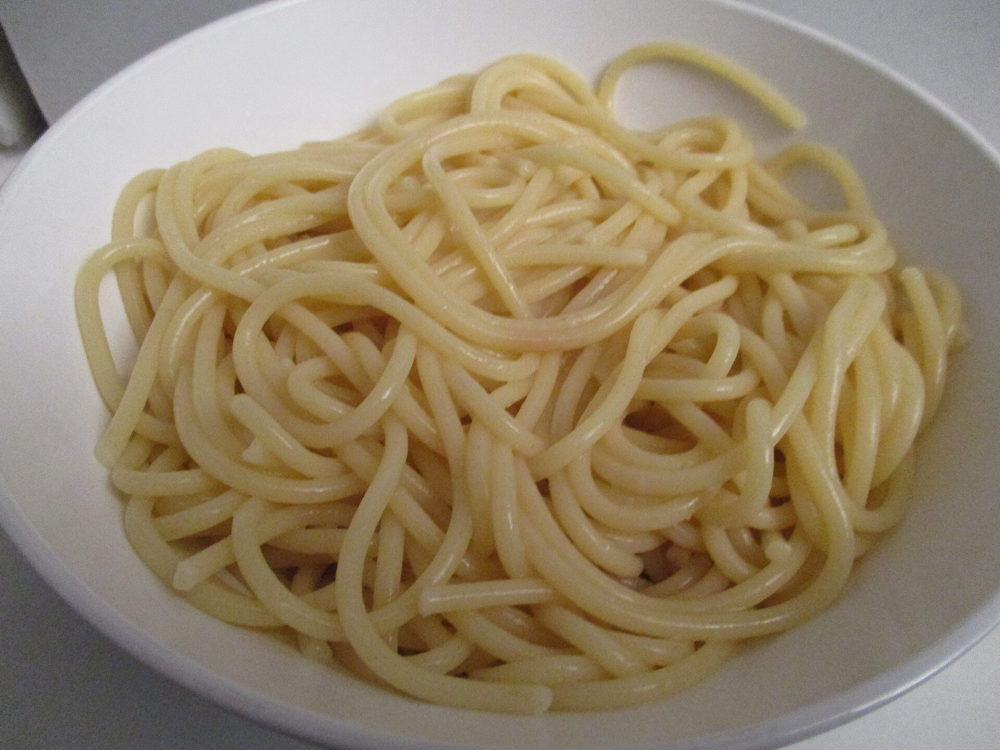

Spaghetti Aglio e Olio
Ingredients
- 8 oz spaghetti
- 4 cloves garlic, thinly sliced
- 3 tablespoons olive oil
- 1/2 teaspoon red pepper flakes
- Parsley, salt, and Parmesan to taste
Steps
- Boil the spaghetti in salted water until al dente.
- Warm olive oil in a pan and gently cook the garlic.
- Add red pepper flakes and a splash of pasta water.
- Toss in the spaghetti and finish with parsley and Parmesan.